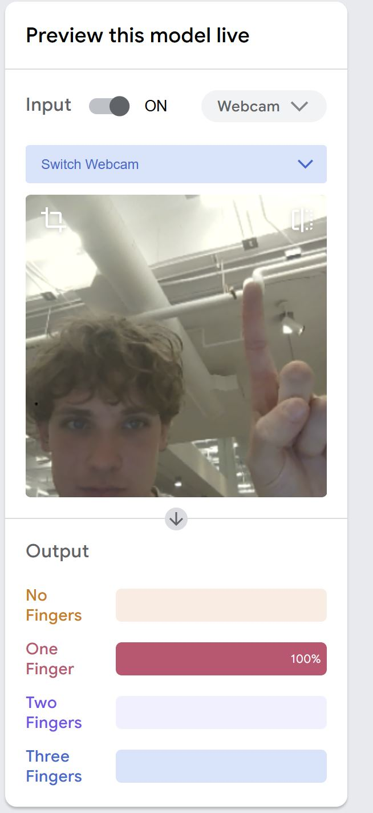

As can be seen, our Teachable Machine is not quite perfect yet. There are still some problems with some overcompensation for the value 3, and it is a bit difficult to understand why. In our future checkpoints for this project, we hope to resolve this and make our model more accurate. For now, we are pleased with the progress we have made in efficiency and runtime, and it is interesting to see a decently accurate AI recognizing the amount of fingers we are holding up!
Since the first checkpoint, we revised our machine learning model on Teachable Machine. Since we only used the images on teachable machine, they are not included in the GitHub. However, the update which we did was focused on including a more well-rounded database of pictures. Before, most of the pictures were stagnant and all of them included our space. We fixed this by holding up fingers from a varied distance, some including our face, and some not. This variance in a our data resulted in a much more accurate model, and we are proud of the improvement we made! Please look below to learn more!!
